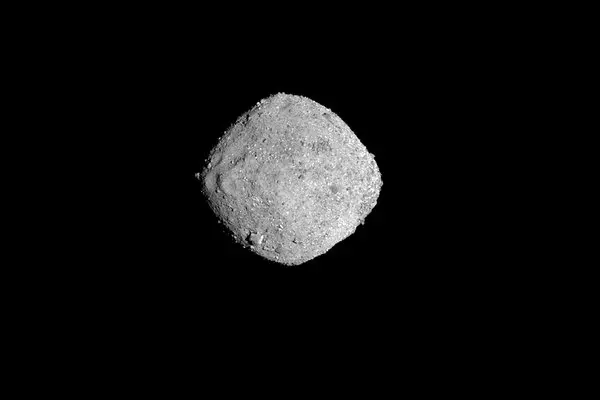
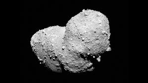
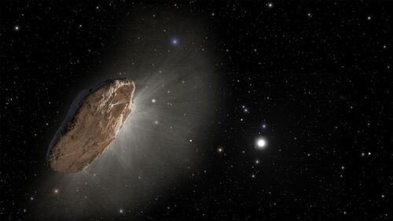

Астероїд
Астероїд це шматок скелі та металу у космічному просторі, який знаходиться на орбіті навколо Сонця. Астероїди можуть мати як декілька метрів, так і сотні км у діаметрі.Більшість астероїдів не круглі, а грудоподібні і мають форму картоплі.Вони постійно крутяться навколо Сонця та Землі. Також астероїди часто називають малими планетами.
Види астероїдів
Існує три основні види астероїдів, засновані на тому, з якого елементу вони складаються. Сюди відносяться вуглець, кремній та металеві.



Потрапляння астероїда на Землю
Багато астероїдів вже вразили Землю.
За оцінками, астероїд заввишки
більше 3 м вражає Землю приблизно один раз на рік. Вони зазвичай
вибухають, потрапляючи в земну атмосферу і завдаючи невеликої шкоди
поверхні Землі.Існують й інші групи астероїдів поза поясом астероїдів. Однією з основних є троянські астероїди. Вони ділять орбіту з планетою або місяцем. Однак вони не стикаються з планетою. Більшість троянських астероїдів крутяться між Сонцем та Юпітером. Деякі вчені вважають, що може бути стільки троянських астероїдів, скільки астероїдів у поясі.
Цікаві факти про астероїди:
- Італійський астроном Джузеппе П'яцца відкрив перший астероїд Церера в 1801 році.
- Слово астероїд походить від грецького слова, що означає "зіркоподібний".
-
П’ять найбільших астероїдів становлять понад 50% загальної маси
поясу астероїдів,а саме:
- Церера - діаметр ~940 км
- Веста (~525 км)
- Паллада (~510 км)
- Паллада один із найбільших астероїдів у Сонячній системі
- Паллада належить до головного поясу астероїдів.
- Гігея (~430 км)
- Інтерамнія (~350 км)
- Деякі вчені вважають, що вимирання динозаврів було спричинене великим астероїдом, що стикався із Землею.